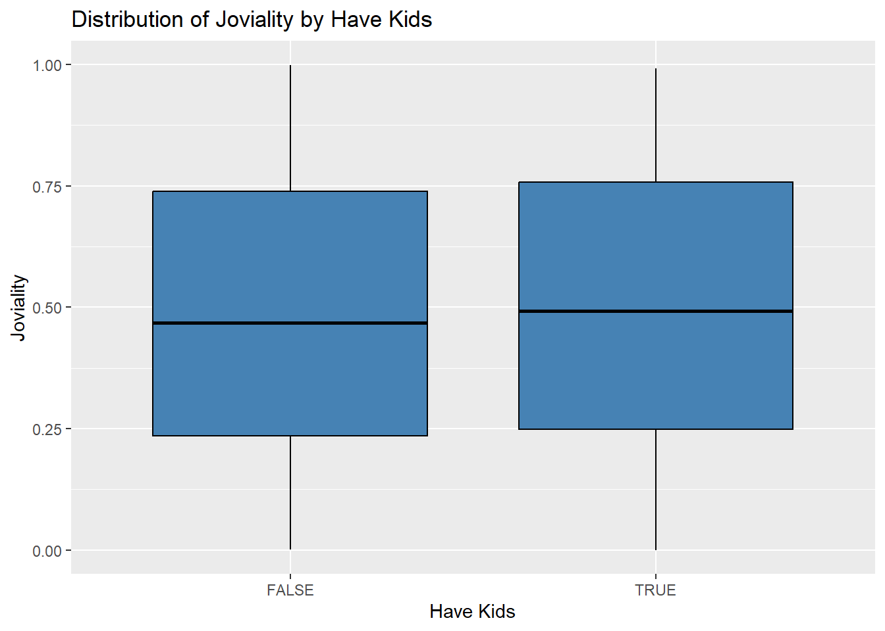
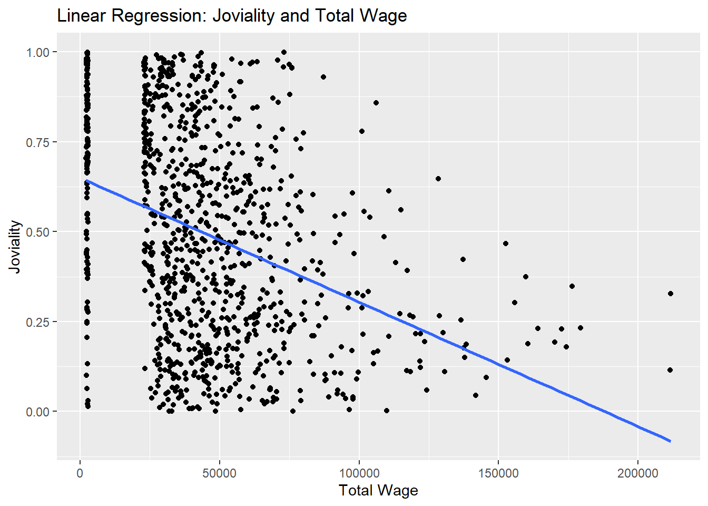
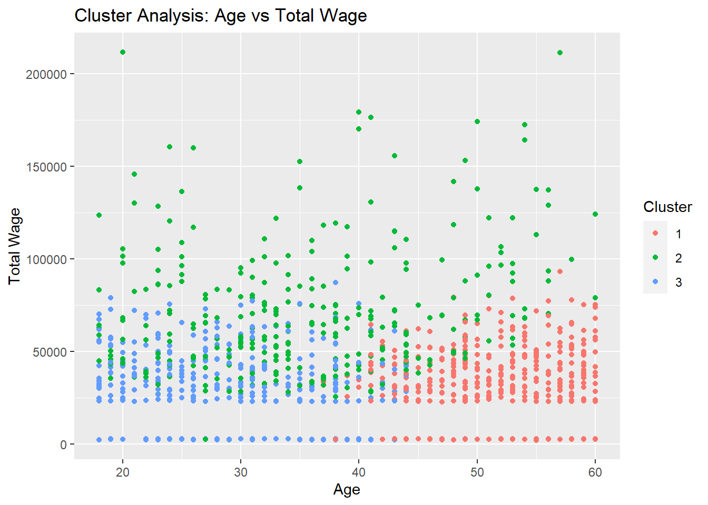
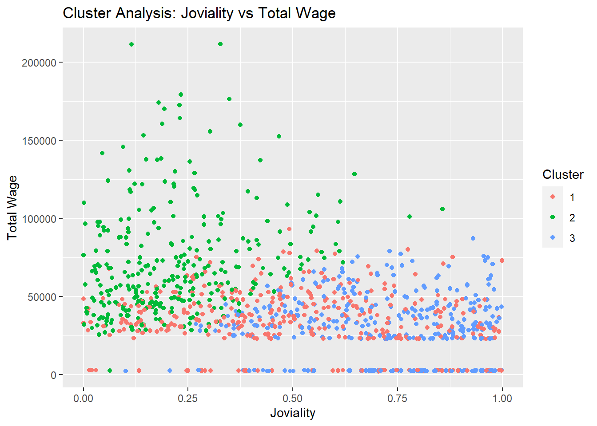

#Load packages
pacman::p_load(plotly, ggstatsplot, knitr, patchwork, ggdist, ggthemes, tidyverse, magrittr, ggplot2)Take-home_Ex01
Set the scene
City of Engagement, with a total population of 50,000, is a small city located at Country of Nowhere. The city serves as a service centre of an agriculture region surrounding the city. The main agriculture of the region is fruit farms and vineyards. The local council of the city is in the process of preparing the Local Plan 2023. A sample survey of 1000 representative residents had been conducted to collect data related to their household demographic and spending patterns, among other things. The city aims to use the data to assist with their major community revitalization efforts, including how to allocate a very large city renewal grant they have recently received.
Get Started
In the code chunk below, p_load() of pacman package is used to install and load the following R packages into R environment:
Load Data
# Read Participants.csv
participants <- read_csv("C:/Fay1109/ISSS608-VAA/Take-home_Ex/Take-home_Ex01/data/Participants.csv")
# Read FinancialJournal.csv
financial_journal <- read_csv("C:/Fay1109/ISSS608-VAA/Take-home_Ex/Take-home_Ex01/data/FinancialJournal.csv")Check Duplicated Data
To check if there are duplicated data in participants and financial_journal data files.
# Check for duplicated data in participants dataset
duplicated_data <- participants[duplicated(participants), ]
duplicated_data# A tibble: 0 × 7
# ℹ 7 variables: participantId <dbl>, householdSize <dbl>, haveKids <lgl>,
# age <dbl>, educationLevel <chr>, interestGroup <chr>, joviality <dbl># Check for duplicated data in participants dataset
duplicated_data <- financial_journal[duplicated(financial_journal), ]
duplicated_data# A tibble: 1,113 × 4
participantId timestamp category amount
<dbl> <dttm> <chr> <dbl>
1 0 2022-03-01 00:00:00 Shelter -555.
2 0 2022-03-01 00:00:00 Education -38.0
3 1 2022-03-01 00:00:00 Shelter -555.
4 1 2022-03-01 00:00:00 Education -38.0
5 2 2022-03-01 00:00:00 Shelter -557.
6 2 2022-03-01 00:00:00 Education -12.8
7 3 2022-03-01 00:00:00 Shelter -555.
8 3 2022-03-01 00:00:00 Education -38.0
9 4 2022-03-01 00:00:00 Shelter -1556.
10 4 2022-03-01 00:00:00 Education -12.8
# ℹ 1,103 more rowsRemove Duplicated Data
# Remove duplicated rows
financial_journal <- financial_journal[!duplicated(financial_journal[c("participantId", "timestamp", "category", "amount")]), ]
# Print the updated dataset
print(financial_journal)# A tibble: 1,512,523 × 4
participantId timestamp category amount
<dbl> <dttm> <chr> <dbl>
1 0 2022-03-01 00:00:00 Wage 2473.
2 0 2022-03-01 00:00:00 Shelter -555.
3 0 2022-03-01 00:00:00 Education -38.0
4 1 2022-03-01 00:00:00 Wage 2047.
5 1 2022-03-01 00:00:00 Shelter -555.
6 1 2022-03-01 00:00:00 Education -38.0
7 2 2022-03-01 00:00:00 Wage 2437.
8 2 2022-03-01 00:00:00 Shelter -557.
9 2 2022-03-01 00:00:00 Education -12.8
10 3 2022-03-01 00:00:00 Wage 2367.
# ℹ 1,512,513 more rowsData Wrangling
Convert educationLevel data into ordinal form.
participants <- participants %>%
mutate(educationLevel = recode(educationLevel,
"Low" = 1,
"HighSchoolOrCollege" = 2,
"Bachelors" = 3,
"Graduate" = 4))
# Now you can analyze the relationship between the ordinal educationLevel and jovialityhead(participants)# A tibble: 6 × 7
participantId householdSize haveKids age educationLevel interestGroup
<dbl> <dbl> <lgl> <dbl> <dbl> <chr>
1 0 3 TRUE 36 2 H
2 1 3 TRUE 25 2 B
3 2 3 TRUE 35 2 A
4 3 3 TRUE 21 2 I
5 4 3 TRUE 43 3 H
6 5 3 TRUE 32 2 D
# ℹ 1 more variable: joviality <dbl>Change the format of timestamp into month-day.
# Assuming your data frame is called 'financial_journal'
financial_journal$month_day <- format(as.Date(financial_journal$timestamp), "%m-%d")Change the sign of expense into positive.
# Change the sign of amount to positive
financial_journal <- financial_journal %>%
mutate(amount = abs(amount))head(financial_journal)# A tibble: 6 × 5
participantId timestamp category amount month_day
<dbl> <dttm> <chr> <dbl> <chr>
1 0 2022-03-01 00:00:00 Wage 2473. 03-01
2 0 2022-03-01 00:00:00 Shelter 555. 03-01
3 0 2022-03-01 00:00:00 Education 38.0 03-01
4 1 2022-03-01 00:00:00 Wage 2047. 03-01
5 1 2022-03-01 00:00:00 Shelter 555. 03-01
6 1 2022-03-01 00:00:00 Education 38.0 03-01 EDA
Distribution of Age
The distribution of age shows that the number of people under 20 is less than other groups.
For people in other four groups, the numbers of people are similar.
# Create age groups
participants <- participants %>%
mutate(age_group = cut(age, breaks = c(0, 20, 30, 40, 50, 60, Inf),
labels = c("0-20", "20-30", "30-40", "40-50", "50-60", "60+"),
include.lowest = TRUE))
# Distribution of Age
ggplot(data = participants, aes(x = age_group)) +
geom_bar(fill = "steelblue", color = "black") +
labs(x = "Age Group", y = "Count") +
ggtitle("Distribution of Age")Distribution of Education Level
The distribution of educationLevel shows that the number of people with HighSchoolor College degree is the highest, followed by Bachelors degree. The number of people with Low degree is the lowest.
# Distribution of EducationLevel
ggplot(data = participants, aes(x = educationLevel)) +
geom_bar(fill = "steelblue", color = "black") +
labs(x = "Education Level", y = "Count") +
ggtitle("Distribution of Education Level")Distribution of interest group
The distribution of interest group shows that group J is the most popular one within the population.
# Distribution of InterestGroup
ggplot(data = participants, aes(x = interestGroup)) +
geom_bar(fill = "steelblue", color = "black") +
labs(x = "Interest Group", y = "Count") +
ggtitle("Distribution of Interest Group")Distribution of expense under each category
Calculate the sum of expense under each category including food, shelter, recreation and education.
# Filter the financial journal for each category and calculate the sum of expenses
food_expenses <- financial_journal %>%
filter(category == "Food") %>%
summarise(total_amount = sum(amount))
shelter_expenses <- financial_journal %>%
filter(category == "Shelter") %>%
summarise(total_amount = sum(amount))
recreation_expenses <- financial_journal %>%
filter(category == "Recreation") %>%
summarise(total_amount = sum(amount))
education_expenses <- financial_journal %>%
filter(category == "Education") %>%
summarise(total_amount = sum(amount))
# Print the results
print(food_expenses)# A tibble: 1 × 1
total_amount
<dbl>
1 3703421.print(shelter_expenses)# A tibble: 1 × 1
total_amount
<dbl>
1 6776049.print(recreation_expenses)# A tibble: 1 × 1
total_amount
<dbl>
1 4143338.print(education_expenses)# A tibble: 1 × 1
total_amount
<dbl>
1 140012.It can be seen that the expense spent on shelter is the largest among total expense and the expense on education is the least.
# Create a data frame with category and total amount
expenses <- data.frame(
Category = c("Food", "Shelter", "Recreation", "Education"),
TotalAmount = c(food_expenses$total_amount, shelter_expenses$total_amount,
recreation_expenses$total_amount, education_expenses$total_amount)
)
# Create the bar plot
ggplot(data = expenses, aes(x = Category, y = TotalAmount)) +
geom_bar(stat = "identity", fill = "steelblue") +
labs(x = "Expense Category", y = "Total Amount", title = "Distribution of Expense Categories")Distribution of total expense by month
Calculate the total expense spent by population of each month.
Plot line chart to show changes across time. It can be seen that the expense reach the highest level in March.
library(lubridate)
# Convert the timestamp column to date format
financial_journal$timestamp <- as.Date(financial_journal$timestamp)
# Extract the month from the timestamp column
financial_journal$month <- month(financial_journal$timestamp)
# Group the financial_journal data by month and category, and calculate the sum of amount
monthly_expenses <- financial_journal %>%
group_by(month, category) %>%
summarize(total_amount = sum(amount))
# Filter the expenses for the four categories
filtered_expenses <- monthly_expenses %>%
filter(category %in% c("Food", "Shelter", "Recreation", "Education"))
# Sum the expenses by month
sum_by_month <- filtered_expenses %>%
group_by(month) %>%
summarize(total_expenses = sum(total_amount))
# Print the resulting data frame
print(sum_by_month)# A tibble: 12 × 2
month total_expenses
<dbl> <dbl>
1 1 1194726.
2 2 1123479.
3 3 1623411.
4 4 1265334.
5 5 1219848.
6 6 1187592.
7 7 1213307.
8 8 1189678.
9 9 1174663.
10 10 1210174.
11 11 1161012.
12 12 1199598.# Plot the line graph
ggplot(sum_by_month, aes(x = month, y = total_expenses, group = 1)) +
geom_line() +
labs(x = "Month", y = "Total Expenses", title = "Sum of Expenses by Month") +
scale_x_continuous(breaks = 1:12, labels = month.abb) +
theme_minimal()Calculate each participant’s wage expense, shelter expense, education expense and recreation expense.
# Calculate the sum of wage group by participantID
wage_sum <- financial_journal %>%
filter(category == "Wage") %>%
group_by(participantId) %>%
summarize(total_wage = sum(amount))# Calculate the sum of shelter group by participantID
shelter_sum <- financial_journal %>%
filter(category == "Shelter") %>%
group_by(participantId) %>%
summarize(total_Shelter = sum(amount))# Calculate the sum of education group by participantID
education_sum <- financial_journal %>%
filter(category == "Education") %>%
group_by(participantId) %>%
summarize(total_education = sum(amount))# Calculate the sum of food group by participantID
food_sum <- financial_journal %>%
filter(category == "Food") %>%
group_by(participantId) %>%
summarize(total_food = sum(amount))# Calculate the sum of recreation group by participantID
recreation_sum <- financial_journal %>%
filter(category == "Recreation") %>%
group_by(participantId) %>%
summarize(total_recreation = sum(amount))Relationship between variables
Relationship between expense on education and wage
Explore the relationship between expense on education and wage.
costs <- merge(education_sum, wage_sum, by = "participantId")The correlation analysis between total_education and total_wage variables resulted in a Pearson’s product-moment correlation coefficient of 0.2687. This coefficient indicates a positive correlation between the two variables.
The test statistic (t-value) is 4.8227 with degrees of freedom (df) equal to 299. The p-value associated with the test statistic is 2.259e-06, which is very small. This low p-value suggests strong evidence against the null hypothesis of no correlation, indicating that there is a significant correlation between total_education and total_wage.
The 95% confidence interval for the correlation coefficient ranges from 0.1605 to 0.3705. This interval provides an estimated range within which the true correlation between the variables is likely to fall.
In conclusion, based on this analysis, there is a statistically significant positive correlation (0.2687) between the total education expenses and total wage amounts.
correlation_test <- cor.test(costs$total_education, costs$total_wage)
print(correlation_test)
Pearson's product-moment correlation
data: costs$total_education and costs$total_wage
t = 4.8227, df = 299, p-value = 2.259e-06
alternative hypothesis: true correlation is not equal to 0
95 percent confidence interval:
0.1604738 0.3704532
sample estimates:
cor
0.2686522 The R-squared value of 0.07 indicates that approximately 7% of the variance in the wage variable can be explained by the linear relationship with the education variable. This means that the education level alone explains a small portion of the variation in wages.
The equation “wage = 27.88 * education + 36404.3” represents the estimated linear relationship between the education level and wages. The coefficient 27.88 indicates that, on average, for every unit increase in the education level, the wage is expected to increase by approximately 27.88 units.
scatter_plot <- ggplot(costs, aes(x = total_education, y = total_wage)) +
geom_point() +
geom_smooth(method = "lm", se = FALSE, color = "blue") +
xlab("Total Education Cost") +
ylab("Total Wage Cost") +
ggtitle("Relationship between Education Cost and Wage Cost") +
theme_bw() +
theme(plot.title = element_text(hjust = 0.5))
# Calculate coefficients of the linear regression model
lm_model <- lm(total_wage ~ total_education, data = costs)
intercept <- coef(lm_model)[1]
slope <- coef(lm_model)[2]
# Create the equation string
equation <- paste0("Wage = ", round(slope, 2), " * Education + ", round(intercept, 2))
# Calculate R-squared value
r_squared <- round(summary(lm_model)$r.squared, 2)
# Add equation and R-squared as text annotations
scatter_plot <- scatter_plot +
geom_text(x = max(costs$total_education), y = max(costs$total_wage), label = equation, hjust = 1, vjust = 1, color = "black") +
geom_text(x = max(costs$total_education), y = max(costs$total_wage), label = paste0("R-squared = ", r_squared), hjust = 1, vjust = 0, color = "black")
print(scatter_plot)
Explore the relationship between age and joviality.
First, divide population into five groups. Then calculate the average joviality of each group.
It can be seen from the graph that people in group 4 whose age falls between 45 to 55 have the lowest level of joviality.
# Categorize participants into age groups
participants <- participants %>%
mutate(age_group = cut(age, breaks = c(0, 25, 35, 45, 55, Inf),
labels = c("Group 1", "Group 2", "Group 3", "Group 4", "Group 5"),
include.lowest = TRUE))
# Calculate average joviality for each age group
avg_joviality <- participants %>%
group_by(age_group) %>%
summarise(avg_joviality = mean(joviality, na.rm = TRUE))
# Print the average joviality by age group
print(avg_joviality)# A tibble: 5 × 2
age_group avg_joviality
<fct> <dbl>
1 Group 1 0.512
2 Group 2 0.514
3 Group 3 0.507
4 Group 4 0.444
5 Group 5 0.499# Create bar chart
bar_chart <- ggplot(avg_joviality, aes(x = age_group, y = avg_joviality)) +
geom_bar(stat = "identity", fill = "steelblue", color = "black") +
labs(x = "Age Group", y = "Average Joviality", title = "Average Joviality by Age Group (Bar Chart)")
# Create line graph
line_graph <- ggplot(avg_joviality, aes(x = as.numeric(age_group), y = avg_joviality)) +
geom_line(color = "black", size = 1) +
labs(x = "Age Group", y = "Average Joviality", title = "Average Joviality by Age Group (Line Graph)")
# Combine bar chart and line graph
combined_plot <- bar_chart +
geom_line(data = avg_joviality, aes(x = as.numeric(age_group), y = avg_joviality), color = "black", size = 1) +
theme(axis.text.x = element_blank(), axis.ticks.x = element_blank())
# Display the combined plot
print(combined_plot)Explore the relationship between joviality and havekids.
It can be seen from the boxplot that there is not too much difference between these two groups.
The median of joviality of people who have children is slightly higher than group who do not have children.
# Create a box plot of joviality by haveKids
ggplot(data = participants, aes(x = haveKids, y = joviality)) +
geom_boxplot(fill = "steelblue", color = "black") +
labs(x = "Have Kids", y = "Joviality") +
ggtitle("Distribution of Joviality by Have Kids")
Explore the relationship between household size and shelter expense.
From the boxplot we can see that the shelter expense does not exhibit a positive relationship with household size. Household size 2 has the highest median expense while the expense on household size 3 has the highest ceiling expense which is reasonable.
# Merge the shelter sum data with participants data
shelter_data <- merge(participants, shelter_sum, by = "participantId", all.x = TRUE)
# Create box plot
box_plot <- ggplot(shelter_data, aes(x = as.factor(householdSize), y = total_Shelter)) +
geom_boxplot(fill = "steelblue", color = "black") +
labs(x = "Household Size", y = "Expense on Shelter", title = "Relationship between Household Size and Shelter Expense") +
theme_minimal()
# Display the box plot
print(box_plot)Explore the relationship between wage and education level.
From the graph it can be seen that people with higher education level have higher wage level.
People with graduate degree earn the most and people with low degree earn the least.
# Merge participants data with wage_sum data
merged_data <- merge(participants, wage_sum, by = "participantId", all.x = TRUE)
# Create a scatter plot
ggplot(data = merged_data, aes(x = educationLevel, y = total_wage)) +
geom_point() +
labs(x = "Education Level", y = "Total Wage") +
ggtitle("Relationship between Education Level and Total Wage")Explore the relationship between wage and interest group.
From the graph it can be seen that there is not too much difference in wage between different groups. The median wage of different interest group is similar.
# Wage and Interest Group
# Merge wage_sum with participants data
merged_data <- merge(participants, wage_sum, by = "participantId")
# Create a box plot
ggplot(data = merged_data, aes(x = interestGroup, y = total_wage)) +
geom_boxplot(fill = "steelblue", color = "black") +
labs(x = "Interest Group", y = "Total Wage") +
ggtitle("Relationship between Wage and Interest Group")Explore the relationship between age and wage.
From the boxplot it can be seen that there is not too much difference in median of wage across different age groups. While people in the first group and the last group have the highest ceiling wage.
# Define age ranges
age_ranges <- c("0-25", "26-35", "36-45", "46-55", "56+")
# Categorize participants into age groups:
participants <- participants %>%
mutate(age_group = cut(age, breaks = c(0, 25, 35, 45, 55, Inf),
labels = age_ranges,
include.lowest = TRUE))
# Merge wage_sum with participants data
merged_data <- merge(participants, wage_sum, by = "participantId")
# Create a box plot
ggplot(data = merged_data, aes(x = age_group, y = total_wage)) +
geom_boxplot(fill = "steelblue", color = "black") +
labs(x = "Age Range", y = "Total Wage") +
ggtitle("Relationship between Age Range and Wage")Calculate the average wage of each age group.
# Calculate average wage for each age group
avg_wage <- merged_data %>%
group_by(age_group) %>%
summarize(avg_wage = mean(total_wage))
# Print the average wage by age group
print(avg_wage)# A tibble: 5 × 2
age_group avg_wage
<fct> <dbl>
1 0-25 46863.
2 26-35 44279.
3 36-45 45936.
4 46-55 44407.
5 56+ 43845.The linear regression analysis examined the association between joviality and total wage among the participants. The results revealed a statistically significant relationship between the two variables as the p-value is extremely small. The estimated intercept, representing the joviality when the total wage is zero, was found to be 0.6497. Additionally, the coefficient for the total wage variable was -3.456e-06, indicating that for each unit increase in total wage, the joviality is expected to decrease by 3.456e-06 units, holding other variables constant. The model showed that approximately 13.15% of the variability in joviality can be explained by the linear relationship with total wage, as indicated by the R-squared value. The statistical significance of the F-statistic further supported the overall significance of the model. It shows that the joviality decreases when wage increases.
# Merge participants data with wage_sum data
merged_data <- merge(participants, wage_sum, by = "participantId", all.x = TRUE)
# Perform linear regression
lm_model <- lm(joviality ~ total_wage, data = merged_data)
# Print the regression summary
summary(lm_model)
Call:
lm(formula = joviality ~ total_wage, data = merged_data)
Residuals:
Min 1Q Median 3Q Max
-0.62577 -0.22125 0.00418 0.20937 0.60214
Coefficients:
Estimate Std. Error t value Pr(>|t|)
(Intercept) 6.497e-01 1.523e-02 42.65 <2e-16 ***
total_wage -3.456e-06 2.796e-07 -12.36 <2e-16 ***
---
Signif. codes: 0 '***' 0.001 '**' 0.01 '*' 0.05 '.' 0.1 ' ' 1
Residual standard error: 0.2717 on 1009 degrees of freedom
Multiple R-squared: 0.1315, Adjusted R-squared: 0.1306
F-statistic: 152.8 on 1 and 1009 DF, p-value: < 2.2e-16# Create a scatter plot with linear regression line
ggplot(data = merged_data, aes(x = total_wage, y = joviality)) +
geom_point() +
geom_smooth(method = "lm", se = FALSE) +
labs(x = "Total Wage", y = "Joviality") +
ggtitle("Linear Regression: Joviality and Total Wage")
Cluster Analysis
Joviality, Age and Total Wage
Cluster 1 has an average joviality of 0.4753, indicating a moderate level of joviality. The average age in this cluster is 51.36533, suggesting that the participants in this group are relatively older. The average total wage for this cluster is 37112.00, which indicates a moderate level of income.
Cluster 2 exhibits a higher average joviality of 0.7306, indicating a higher level of joviality compared to the other clusters. The average age in this cluster is 29.85511, suggesting that the participants in this group are relatively younger. The average total wage for this cluster is 30882.44, indicating a moderate level of income.
Cluster 3 has a lower average joviality of 0.2247, indicating a relatively lower level of joviality. The average age in this cluster is 34.27113, indicating participants of varying ages. Interestingly, this cluster has the highest average total wage of 73274.87, suggesting a relatively higher income level.
# Merge participants and wage_sum datasets
merged_data <- merge(participants, wage_sum, by = "participantId", all.x = TRUE)
# Select the variables for clustering
data <- merged_data[, c("joviality", "age", "total_wage")]
# Standardize the variables (optional)
data <- scale(data)
# Determine the number of clusters (k)
k <- 3
# Apply k-means clustering
kmeans_result <- kmeans(data, centers = k)
# Extract the cluster assignments
cluster_assignments <- kmeans_result$cluster
# Print the cluster assignments
print(cluster_assignments)# Add cluster assignments to the merged_data dataframe
merged_data$cluster <- cluster_assignments
# Calculate the average values by cluster
cluster_summary <- merged_data %>%
group_by(cluster) %>%
summarise(avg_joviality = mean(joviality),
avg_age = mean(age),
avg_total_wage = mean(total_wage))
# Print the cluster summary
print(cluster_summary)# A tibble: 3 × 4
cluster avg_joviality avg_age avg_total_wage
<int> <dbl> <dbl> <dbl>
1 1 0.514 51.4 35223.
2 2 0.219 35.5 71897.
3 3 0.719 28.9 31786.# Add cluster assignments to the merged_data dataframe
merged_data$cluster <- cluster_assignments
# Create scatter plots
ggplot(merged_data, aes(x = age, y = total_wage, color = factor(cluster))) +
geom_point() +
labs(x = "Age", y = "Total Wage", color = "Cluster") +
ggtitle("Cluster Analysis: Age vs Total Wage")
ggplot(merged_data, aes(x = joviality, y = total_wage, color = factor(cluster))) +
geom_point() +
labs(x = "Joviality", y = "Total Wage", color = "Cluster") +
ggtitle("Cluster Analysis: Joviality vs Total Wage")
library(GGally)
# Select the variables of interest
cluster_vars <- merged_data[, c("joviality", "age", "total_wage", "cluster")]
# Create parallel coordinate plot
ggparcoord(cluster_vars, columns = 1:3, groupColumn = "cluster", alphaLines = 0.6) +
labs(x = "Variable", y = "Value", color = "Cluster") +
ggtitle("Cluster Analysis: Parallel Coordinate Plot")